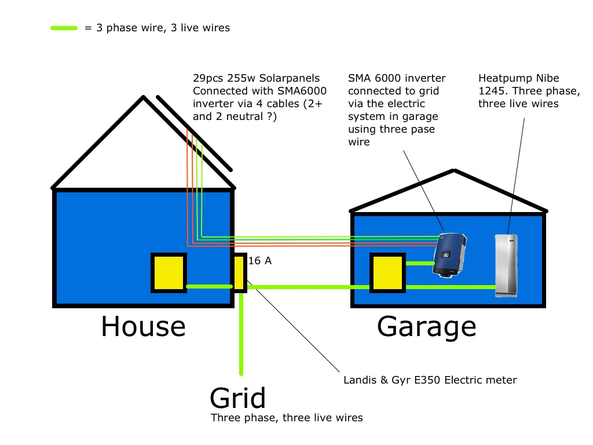
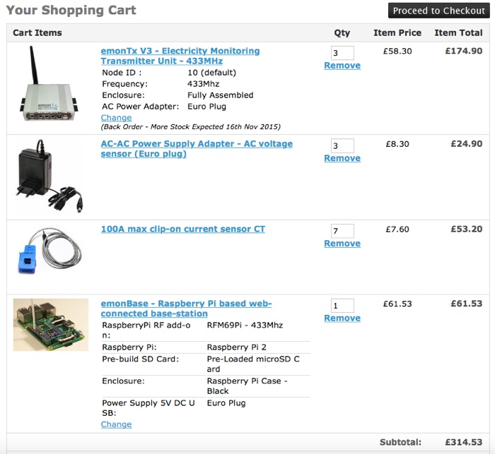
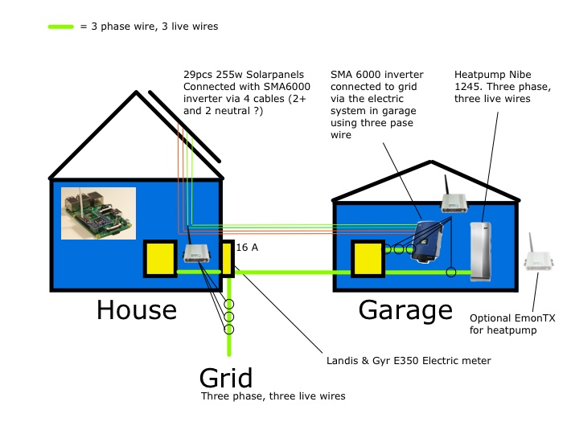

I'm really want to order and start building my openenergy system, monitoring my house, heatpump and solarpanels.
I have tried reading up on what parts I would need but as I'm wiser in computers than electricity I need to ask you all for help. I'm from Sweden and we have 3 phase mostly everywhere...I understand most of the basics but need you explain how many CT's I need, how many AC-AC plug in power adapters and positioning of it all.
Want to:
- Monitor production of my Solar PV (29 panels, 255 watt each, 7.3 kWp, SMA 6000 inverter)
- Monitor instant production (power) of my solarpanels
- Monitor household energy and instant powerusage
- Monitor heatpump energy and instant powerusage
- Split up and see actual import or export of eletricity
As you can see in my attached drawing my units are a bit spread out in my house and garage, I have tried to explain as good as I can but please ask me for more info.
Re: Help me choose and build my system
In the UK, we only have 3-phase supplies in large commercial buildings, therefore all of OEM is designed around a single phase supply. However, it is possible to have a compromise in which you measure the line-neutral voltage of one phase and assume the other 2 phases have the same amplitude. Many people have found this to be acceptable, but it is for you to judge.
If you think this will not give you sufficient accuracy, then I believe Robin Emley has a design and might be able to supply a true 3-phase unit. This was designed as an energy diverter, but you do not need to construct the power diverter section and you can use it purely as a monitor. That will monitor 3 voltages and 3 currents.
Whether you use Robin's unit or an emonTx, you will need one unit at each place where you need to measure power, so I count:
Unit 1: Grid connection
Unit 2: Inverter connection
Unit 3: Heat Pump connection
If you are content that you can calculate the house consumption by House = Grid + Inverter - Heat Pump, then you should not need a 4th unit to monitor house usage.
You might be able to assume that the heat pump is a properly balanced 3-phase load (meaning that the load on each phase is identical - check the handbook or ask the installer or manufacturer) and in that case you do not need Unit 3, and you can use the 4th CT input on the inverter connection to monitor the heat pump.
If you use the emonTx, you will need for each one:
1 - AC adapter
3 (or 4, see above) - CT
If you like the idea of Robin's unit, you will need to email him at his website for details of what you need.
To collect the information, you need <edit>
an emonPian emonBase - a Raspberry Pi with the RFM69Pi radio module and appropriate firmware</edit>, and that will need a 5 V USB adapter and cable, and a Wi-Fi dongle or Ethernet connection to your router.I think that is all you need.
Although I do not need to know at this stage, is your supply a 4-wire system (has a neutral connection, 230 V line-neutral and 398 V line-line) or a 3-wire system (i.e. has no neutral connection, 230 V line-line and 132 V line-earth)?
[Note: we do not count the protective earth connection when counting the number of supply wires, only the brown, black and grey line and the blue neutral.]
Re: Help me choose and build my system
As of now, I have limited time and limited knowledge to take in the Robin method.
I have tried reading this https://sv.wikipedia.org/wiki/Trefassystem it is in Swedish but it tells me that you can measure 400v between the live wires and 230v between a live wire and neutral. Probably we have 4 cables, 3 live wires and 1 neutral.
So if I understand you right, I will need 3 emonTX with attached 3 (or 4) CT clips on each and 3 AC-AC adapters ? -> all three emonTX connected to one emonPI ?
Re: Help me choose and build my system
OK, so it seems that you have the same 3-phase system that we have. That makes it a little easier for me, because that is the most familiar.
You might not need 3 × emonTx. Your first step will be to ask the manufacturer/installer if your heat pump is a balanced 3-phase load. If they say yes, then you only need 2 × emonTx, but one of those will have 4 CTs attached, the other will have three. If they say no, then you will need 3 × emonTx, and each will have 3 CTs attached. Each emonTx will need an ac adapter.
Note that you do not need an emonPi because you will not use the voltage and current inputs on it, so I have changed that in my post above to an emonBase.
Re: Help me choose and build my system
Thankyou very much for your time and excellent replies!
So in the worst case scenario I would need:
Based on your reply (I have asked my manufacturer of heat pump but no reply yet) and what I can understand that the emonTx is shipped with 1 CT per unit ? Or maybe I'm wrong ?

And the hardware would be placed like this:

Additional questions:
1. How close Do I need to place the AC to AC adaptors ?
2. Is there no solution or plan to transmit via wire between the emonTx and emonBase (i'm a bit allergic to wireless).
3. How many emonTx can transmit to one emonBase ?
4. Do you have any suggestions about display, should I go for the emonGLCD or try to make it all display on a tablet or so... ?
5. Will I with this setup be able to see in realtime, house consumption and production of my solar PV and if I'am importing or exporting energy?
Re: Help me choose and build my system
"the emonTx is shipped with 1 CT per unit ? Or maybe I'm wrong ?"
I'm afraid you are wrong. The basic price is without, you can order one with the emonTx and the rest as a separate line on the order. It doesn't affect the price.
"1. How close Do I need to place the AC to AC adaptors ?"
Ideally within about 1.8 m, because that's the length of the attached cable. But it can be extended without any real problem.
"2. Is there no solution or plan to transmit via wire between the emonTx and emonBase (i'm a bit allergic to wireless)."
Yes, you can use a serial connection (that's what happens inside the emonPi), but I've no idea of the maximum distance that will work over.
"3. How many emonTx can transmit to one emonBase ?"
There's no strict number, the problem is collisions in the radio band. You should be OK with 3, though the occasional missing reading because of a collision is possible.
"4. Do you have any suggestions about display, should I go for the emonGLCD or try to make it all display on a tablet or so... ?"
I thought the GLCD was discontinued, but it has re-appeared. I've no experience with tablets or smartphones. The GLCD is probably more limited than those in its capabilities, but it's more immediate. (By default, the GLCD sketch receives the power data direct from the emonTx's.)
"5. Will I with this setup be able to see in realtime, house consumption and production of my solar PV and if I'am importing or exporting energy?"
Yes, it's pretty much instantaneous (provided you refresh the display if it's via a web interface).
Re: Help me choose and build my system
Yes, it's pretty much instantaneous (provided you refresh the display if it's via a web interface).
Or you can use the realtime graph that updates without the need to refresh the screen.
Click the 24h button to to get the best view of energy import/export.
Re: Help me choose and build my system
Thankyou for your reply.
"Ideally within about 1.8 m, because that's the length of the attached cable. But it can be extended without any real problem."
Help me understand - this AC to AC adapter, for example, the emonPi I plan to have monitoring my PV inverter - do I have to connect the AC to AC adapter on a wall outlet mounted on the same cable that transports the energy from the inverter to my central in the garage ?
"I thought the GLCD was discontinued, but it has re-appeared. I've no experience with tablets or smartphones. The GLCD is probably more limited than those in its capabilities, but it's more immediate. (By default, the GLCD sketch receives the power data direct from the emonTx's.)"
In my case I guess it wont work with "recieve the power data direct from the emonTx" because of calculations that needs to be done ?
"Yes, it's pretty much instantaneous (provided you refresh the display if it's via a web interface)."
Do I understand this correctly that the CT's and emonTx is able to detect and monitor the direction of energy flow with this setup, thus being able to give me "exporting" or "importing" on the grid using only 1 emonTx and three CT's on the incoming grid cables ?
Be patient with all my questions as I have some trouble understanding this setup and the calculations needed to be done to show me House consumtion, PV generation and importing or exporting.
Re: Help me choose and build my system
"do I have to connect the AC to AC adapter..."
Not necessarily, as long as the voltage it measures is representative of the system voltage. What you must not do is put it at the end of a long cable that supplies a heavy load, where the voltage would be significantly lower when the load is on. (The same applies to generation too - except that the voltage will be higher.)
"I guess [the GLCD] wont work.."
Then you repeat the same calculations in the GLCD! (That's normally the case anyway.) I'm not sure of the data path, or even if it exists, to take processed calculations out of emoncms back through emonHub to transmit to the GLCD. The emonPi time data to the GLCD takes the second part of that path, but I think Paul (pb66) or Chaveiro need to help here.
"emonTx is able to detect and monitor the direction of energy flow"
Given a voltage input, that is indeed true. Tha emonTx on the grid connection will give you the nett power transfer - our convention is positive for import, negative for export. So house consumption = Grid + PV - heat pump [maybe].
Re: Help me choose and build my system
So I got a reply from Nibe (my heatpump-manufacturer). They tell me that "perfect" balanced is relative...but the compressor has three identical windings (coils?). Moreover the controlsystem and circulation-pumps is all on one phase they say.
Does this give you some hint if I might use only one CT for my heatpump or do I need to go with three CT's ?
Re: Help me choose and build my system
I rather suspected that the answer would be like that. What it means is, if you're content to accept the small inaccuracy caused by ignoring the extra (or missing - depending on what you monitor) power that's down to the controls and the pump, then you can save the extra emonTx and the CTs. In the overall scheme of things, that inaccuracy will probably be small.
Re: Help me choose and build my system
So for me to understand. This 1cm thick black wire going in to my heatpump needs to be opened and the CT's put over each and every one of the three live wires to monitor all energy used ? Doing it the cheap way is to open the cable and hook up only one of the live wires and get what...?
Or Do you mean that I can connect 1 CT over the whole cable without splitting it up ? Then I can't understand, wouldn't that give me all energy used by heatpump including pumps and control ? (which is exactly what I want to do).
Re: Help me choose and build my system
To understand fully, you need to understand a little about 3-phase systems. You can read more in Building Blocks | 3-Phase Power, but in brief, in a balanced system, the current flowing into the heat pump in one wire (say the brown) flows out in the other two (black & grey) and even if there is a blue neutral wire, no current flows in. This situation changes continuously as the mains cycle progresses, repeating itself at 50 Hz. In your heat pump, Nibe have told you that most of the current does that, but a little extra flows in one phase and returns in the neutral conductor.
So the cheap way is to put a CT on one phase conductor and multiply the power by 3 inside the emonTx (or in both emoncms and in your GLCD).
I would certainly not cut into the cable. It will be much better to open up your heat pump or switchboard and put the CT on a single phase conductor in there.
If you put the whole 3-core or 4-core cable through the CT, it will read absolutely nothing - because all the current flowing through the CT in one direction is also flowing back in the opposite direction, but in a different wire inside the cable.
Re: Help me choose and build my system
I've been searching for an answer to if it might be possible to connect these three emonTx via wire to my RPi at a distance of max 10 meters. I haven't found the answer yet. I'm guessing no but it would be very nice. Or maybe you can talk me out of my bad experiences with wireless ? :)
I'm using a Dallas 1-wire system in my house for a lot of things already, temp, hum, lux and so on.